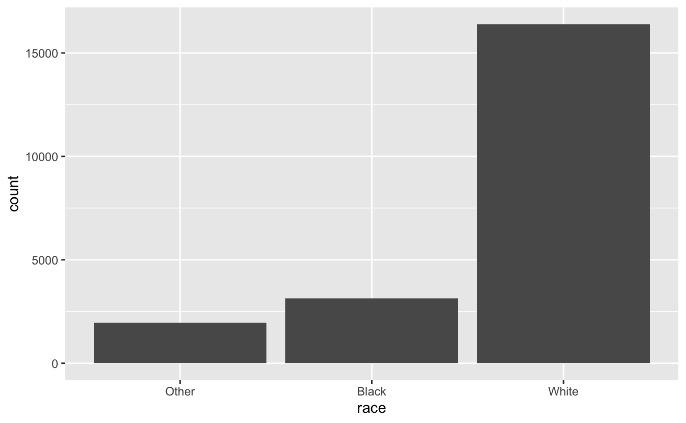
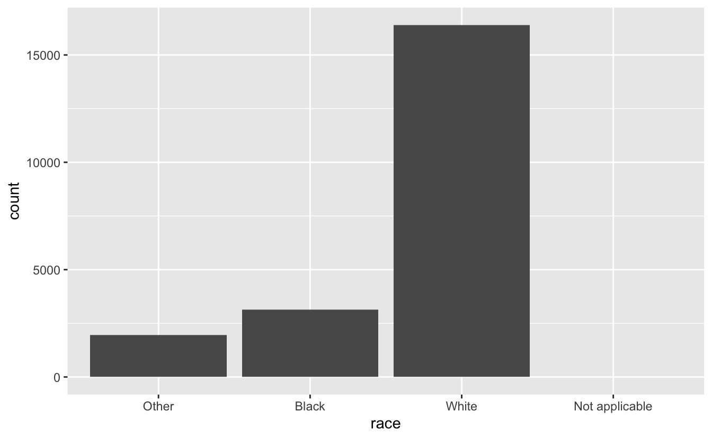
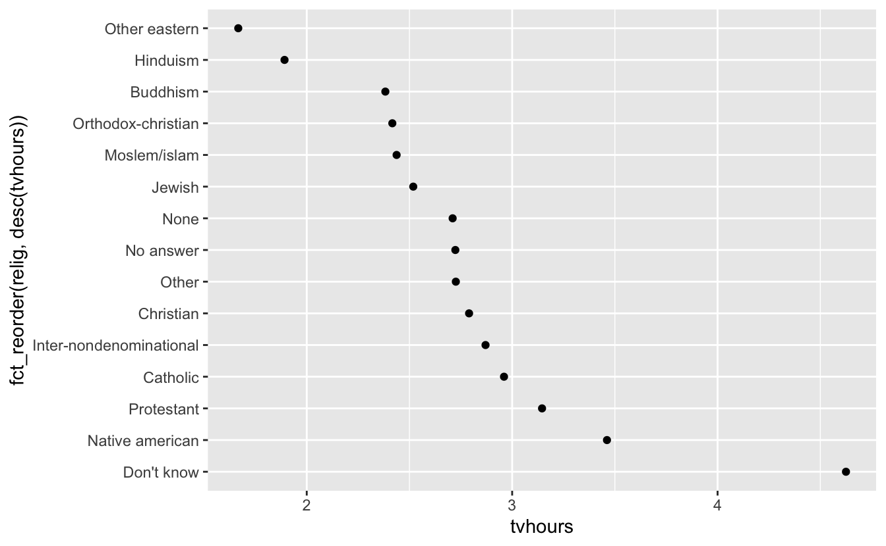
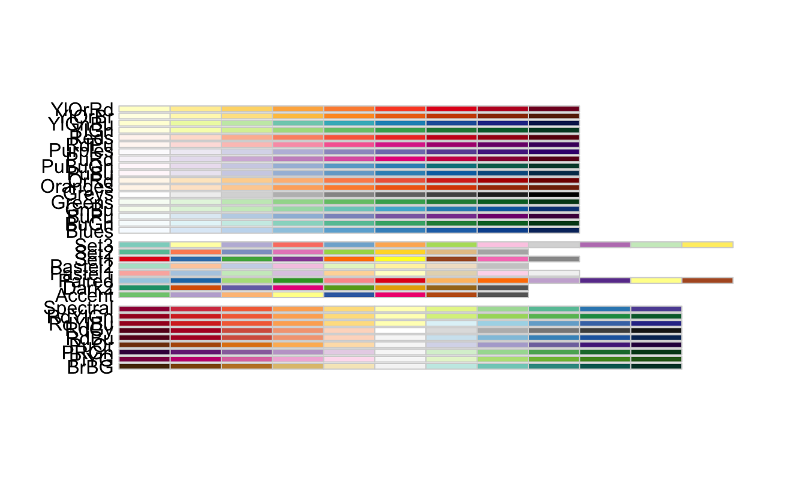
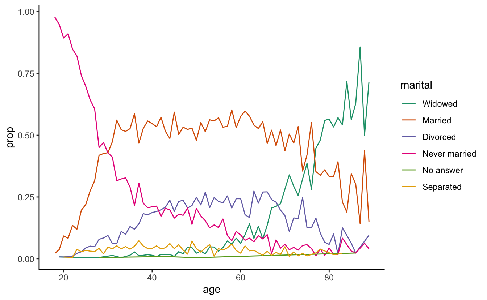
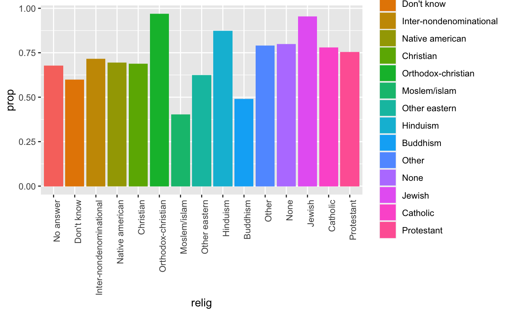

5 Data Transformation Day 2
“Every day, three times per second, we produce the equivalent of the amount of data that the Library of Congress has in its entire print collection, right? But most of it is like cat videos on YouTube or 13-year-olds exchanging text messages about the next Twilight movie.”— Nate Silver
First off…
Advanced R Challenges
Explain how the order of factors changed within the plots for dat2. How do facet_grid and facet_wrap work?
#Can you reorder
library(ggplot2)
library(dplyr)
library(forcats)
dat2 <- structure(list(School = structure(c(2L, 2L, 2L, 1L, 1L, 1L, 3L,
3L, 3L), .Label = c("School1", "School2", "School3"), class = "factor"),
Year = c(2015L, 2014L, 2013L, 2015L, 2014L, 2013L, 2015L,
2014L, 2013L), Rate = c(80L, 90L, 11L, 70L, 50L, 30L, 60L,
50L, 40L), Order = c(1L, 1L, 1L, 2L, 2L, 2L, 3L, 3L, 3L),
Order2 = c(1L, 2L, 3L, 1L, 2L, 3L, 1L, 2L, 3L),
Order3 = structure(c(NA_integer_,
NA_integer_, NA_integer_, NA_integer_, NA_integer_, NA_integer_,
NA_integer_, NA_integer_, NA_integer_),
.Label = c("School2","School1","School3"), class = "factor")),
.Names = c("School","Year", "Rate", "Order", "Order2", "Order3"),
row.names = c(NA,-9L), class = c("tbl_df", "tbl", "data.frame")) %>%
mutate(School = fct_relevel(School, c("School2","School1","School3")))
p <- ggplot(dat2, aes(x=reorder(Year,Order2), Rate), labels = c("School1","School2","School3")) +
geom_bar(stat = "identity", width = 0.5)
p + facet_grid(. ~School)
dat2 %>%
mutate(School = fct_relevel(School, c("School2","School1","School3"))) %>%
ggplot(aes(x=reorder(Year,Order2), Rate), labels = c("School1","School2","School3")) +
geom_bar(stat = "identity", width = 0.5) +
facet_grid(. ~School)Day 2
Note: Much of this lesson can be found in the “factors” chapter of R for Data Science by Hadley Wickham: http://r4ds.had.co.nz/factors.html
gss_cat %>%
count(race) #We can see counts of each race or religion
#> # A tibble: 3 × 2
#> race n
#> <fct> <int>
#> 1 Other 1959
#> 2 Black 3129
#> 3 White 16395
gss_cat %>%
count(relig) %>%
arrange(desc(n)) #We can arrange them in descending order on the count column (n)
#> # A tibble: 15 × 2
#> relig n
#> <fct> <int>
#> 1 Protestant 10846
#> 2 Catholic 5124
#> 3 None 3523
#> 4 Christian 689
#> 5 Jewish 388
#> 6 Other 224
#> # … with 9 more rows
gss_cat %>%
count(age) #Or we can count by age...
#> # A tibble: 73 × 2
#> age n
#> <int> <int>
#> 1 18 91
#> 2 19 249
#> 3 20 251
#> 4 21 278
#> 5 22 298
#> 6 23 361
#> # … with 67 more rows
gss_cat %>%
count(race) %>%
mutate(freq = (n / sum(n))*100) #We can see relative proportions in the sample
#> # A tibble: 3 × 3
#> race n freq
#> <fct> <int> <dbl>
#> 1 Other 1959 9.12
#> 2 Black 3129 14.6
#> 3 White 16395 76.3
levels(gss_cat$rincome)
#> [1] "No answer" "Don't know" "Refused" "$25000 or more"
#> [5] "$20000 - 24999" "$15000 - 19999" "$10000 - 14999" "$8000 to 9999"
#> [9] "$7000 to 7999" "$6000 to 6999" "$5000 to 5999" "$4000 to 4999"
#> [13] "$3000 to 3999" "$1000 to 2999" "Lt $1000" "Not applicable"
#Releveling factors with forcats
df <- forcats::gss_cat#Remember, none of these outcomes are being saved into any objects with <-
#This is just for visualizing and exploring the data.
#We can visualize this information with ggplot2
require(ggplot2) #We will get more into ggplot next week,
#but for now here is an introduction.
ggplot(data = gss_cat, mapping = aes(x =race)) +
geom_bar()
# By default, ggplot2 will drop levels that don’t have any values.
# You can force them to display with:
ggplot(gss_cat, aes(race)) +
geom_bar() +
scale_x_discrete(drop = FALSE)
When working with factors, the two most common operations are: 1. Changing the order of the levels 2. Changing the values of the levels.
Why would you want to do this?
It’s often useful to change the order of the factor levels in a visualisation.
Let’s get the average number of hours spent watching TV per day across religions:
Note: if you put () on the outside of your assignment, it will also print
(relig_summary <- df %>% #Get your data.frame and pipe into the columns
group_by(relig) %>% #group by religion so that each summary will be for one religion
summarise( #Get a summary for the following transformations
age = mean(age, na.rm = T), #Get the mean of age and name it "age"
tvhours = mean(tvhours, na.rm = TRUE), #Get the mean of tv hours and name it "tvhours"
n = n() #Count the number of observations in each group
))
#> # A tibble: 15 × 4
#> relig age tvhours n
#> <fct> <dbl> <dbl> <int>
#> 1 No answer 49.5 2.72 93
#> 2 Don't know 35.9 4.62 15
#> 3 Inter-nondenominational 40.0 2.87 109
#> 4 Native american 38.9 3.46 23
#> 5 Christian 40.1 2.79 689
#> 6 Orthodox-christian 50.4 2.42 95
#> # … with 9 more rowsBecause there were NA’s and we wanted to do math we needed to remove them with: na.rm = TRUE
5.1 Change the order of the levels
Plot with ggplot, arguments are ggplot(data, mapping) + geom_type() mapping is usually paired with the aes() function, which refers to aesthetics arguments to aes are usually aes(x, y, group)

Interesting, but we could pack more info into this visualization

Now we have reordered religion by tv hours watched.
The key argument is fct_reorder(“factor to order”, “column to be ordered by”)
We can do it in descending order as well:
 We just put desc() around tvhours
As you start making more complicated transformations, I’d recommend moving them out of aes() and into a separate mutate() step. For example, you could rewrite the plot above as:
relig_summary %>%
mutate(relig = fct_reorder(relig, tvhours)) %>%
ggplot(aes(tvhours, relig)) +
geom_point()
mtv <- relig_summary %>%
summarise(mtv = mean(tvhours))
relig_summary %>% ggplot(aes(x = tvhours, y = relig, color = relig)
) + geom_point() + geom_vline(aes(xintercept = mtv$mtv))
levels(relig_summary$relig)
#> [1] "No answer" "Don't know"
#> [3] "Inter-nondenominational" "Native american"
#> [5] "Christian" "Orthodox-christian"
#> [7] "Moslem/islam" "Other eastern"
#> [9] "Hinduism" "Buddhism"
#> [11] "Other" "None"
#> [13] "Jewish" "Catholic"
#> [15] "Protestant" "Not applicable"
(testlevel <- relig_summary %>%
mutate(relig = fct_reorder(relig, tvhours)))
#> # A tibble: 15 × 4
#> relig age tvhours n
#> <fct> <dbl> <dbl> <int>
#> 1 No answer 49.5 2.72 93
#> 2 Don't know 35.9 4.62 15
#> 3 Inter-nondenominational 40.0 2.87 109
#> 4 Native american 38.9 3.46 23
#> 5 Christian 40.1 2.79 689
#> 6 Orthodox-christian 50.4 2.42 95
#> # … with 9 more rows
levels(testlevel$relig) #The levels have changed even if the visualization did not.
#> [1] "Other eastern" "Hinduism"
#> [3] "Buddhism" "Orthodox-christian"
#> [5] "Moslem/islam" "Jewish"
#> [7] "None" "No answer"
#> [9] "Other" "Christian"
#> [11] "Inter-nondenominational" "Catholic"
#> [13] "Protestant" "Native american"
#> [15] "Don't know" "Not applicable"

This is most important for plotting
Let’s look at how average age varies across reported income level:
(rincome_summary <- df %>% #Save your df summary as something descriptive
group_by(rincome) %>% #Group by income so that all summaries will be for those levels
summarise( #Create summaries for the following:
age = mean(age, na.rm = TRUE), #Mean age with Na's removed named "age"
tvhours = mean(tvhours, na.rm = TRUE), #Mean tvhours named "tvhours"
n = n() #Count number of observations in each column
))
#> # A tibble: 16 × 4
#> rincome age tvhours n
#> <fct> <dbl> <dbl> <int>
#> 1 No answer 45.5 2.90 183
#> 2 Don't know 45.6 3.41 267
#> 3 Refused 47.6 2.48 975
#> 4 $25000 or more 44.2 2.23 7363
#> 5 $20000 - 24999 41.5 2.78 1283
#> 6 $15000 - 19999 40.0 2.91 1048
#> # … with 10 more rows
ggplot(rincome_summary, aes(age, fct_reorder(rincome, age))) +
geom_point()
Reported income is an ordinal variable so it should be reported that way However fct_reorder will often create an arbitrary order by the second argument (age in this case).
Use fct_relevel to have an ordered outcome:

Now “Not applicable” is up at the top away from the other “special responses” Let’s fix that:
 We put it at the end! Now age and income are ordered! However, larger numbers
map to the top (Larger is higher in conceptual metaphor theory)
We put it at the end! Now age and income are ordered! However, larger numbers
map to the top (Larger is higher in conceptual metaphor theory)
This doesn’t work in the aes() function, so we have to do it earlier!
ordered_rincome <-rincome_summary %>%
mutate(rincome = fct_relevel(rincome, "Not applicable", after = 0))
levels(ordered_rincome$rincome) #not applicable has moved...
#> [1] "Not applicable" "No answer" "Don't know" "Refused"
#> [5] "$25000 or more" "$20000 - 24999" "$15000 - 19999" "$10000 - 14999"
#> [9] "$8000 to 9999" "$7000 to 7999" "$6000 to 6999" "$5000 to 5999"
#> [13] "$4000 to 4999" "$3000 to 3999" "$1000 to 2999" "Lt $1000"
ggplot(ordered_rincome, aes(age, fct_relevel(rincome, "Not applicable"))) +
geom_point() #But still plotting int he wrong order
ordered_rincome <- rincome_summary %>%
mutate(rincome = fct_relevel(rincome, "Not applicable", after = 0)) %>%
mutate(rincome = fct_rev(rincome)) %>% #Now we can use fct_rev()
filter(rincome != "Not applicable",
rincome != "No answer")
ggplot(ordered_rincome, aes(age,rincome)) +
geom_point()

Let’s do some more reordering:
by_age <- data.frame(df) %>% #Get data.frame
na.omit() %>% #Get rid of Na's in age to do maths
count(age, marital) %>% # count observations by age and marital status
group_by(age) %>% #Group by age for the following summary
mutate(prop = n / sum(n)) #Get proportion of counts per age
ggplot(by_age, aes(age, prop, colour = marital)) +
geom_line(na.rm = TRUE)
ggplot(by_age, aes(age, prop, colour = fct_reorder2(marital, age, prop))) +
geom_line() +
labs(colour = "marital")

5.2 RcolorBrewer
Let’s get researched colors for proper visualization best practices from: Brewer, Cynthia A., 200x. http://www.ColorBrewer.org, accessed 09/27/2018.
library(RColorBrewer)
brewer.pal.info
#> maxcolors category colorblind
#> BrBG 11 div TRUE
#> PiYG 11 div TRUE
#> PRGn 11 div TRUE
#> PuOr 11 div TRUE
#> RdBu 11 div TRUE
#> RdGy 11 div FALSE
#> RdYlBu 11 div TRUE
#> RdYlGn 11 div FALSE
#> Spectral 11 div FALSE
#> Accent 8 qual FALSE
#> Dark2 8 qual TRUE
#> Paired 12 qual TRUE
#> Pastel1 9 qual FALSE
#> Pastel2 8 qual FALSE
#> Set1 9 qual FALSE
#> Set2 8 qual TRUE
#> Set3 12 qual FALSE
#> Blues 9 seq TRUE
#> BuGn 9 seq TRUE
#> BuPu 9 seq TRUE
#> GnBu 9 seq TRUE
#> Greens 9 seq TRUE
#> Greys 9 seq TRUE
#> Oranges 9 seq TRUE
#> OrRd 9 seq TRUE
#> PuBu 9 seq TRUE
#> PuBuGn 9 seq TRUE
#> PuRd 9 seq TRUE
#> Purples 9 seq TRUE
#> RdPu 9 seq TRUE
#> Reds 9 seq TRUE
#> YlGn 9 seq TRUE
#> YlGnBu 9 seq TRUE
#> YlOrBr 9 seq TRUE
#> YlOrRd 9 seq TRUE
pal1 <- brewer.pal(n = 6, "Dark2") #Try different palettes
display.brewer.all()
ggplot(by_age, aes(age, prop, colour = fct_reorder2(marital, age, prop))) +
scale_color_brewer(palette = "Dark2") +
geom_line() + theme_classic() +
labs(colour = "marital")
ggplot(by_age, aes(age, prop, colour = fct_reorder2(marital, age, prop))) +
geom_line() +
labs(colour = "marital") + theme_dark() +
scale_color_brewer(palette = "Accent")
ggplot(by_age, aes(age, prop, colour = fct_reorder2(marital, age, prop))) +
geom_line() +
labs(colour = "marital") + theme_void() +
scale_color_brewer(type = "qual")

Finally, for bar plots, you can use fct_infreq() to order levels in increasing frequency: this is the simplest type of reordering because it doesn’t need any extra variables. You may want to combine with fct_rev().
df %>%
mutate(marital = marital %>% fct_infreq() %>% fct_rev()) %>%
ggplot(aes(marital)) +
geom_bar() Notice that you can pipe these arguments WITHIN the mutate() function!
Notice that you can pipe these arguments WITHIN the mutate() function!
Challenge 1
For each factor in df identify whether the order of the levels is arbitrary or principled.
rev(levels(df$marital))
#> [1] "Married" "Widowed" "Divorced" "Separated"
#> [5] "Never married" "No answer"
ggplot(df, aes(year,fill = relig)) +
geom_histogram(bins = 8) +
scale_fill_brewer(palette = "Set3")
#> Warning in RColorBrewer::brewer.pal(n, pal): n too large, allowed maximum for palette Set3 is 12
#> Returning the palette you asked for with that many colors
ggplot(df, aes(year,fill = fct_lump(relig,n = 8))) +
geom_histogram(bins = 8) +
scale_fill_brewer(palette = "Set3")

How would you determine this?
5.3 Modifying Factor Levels
Here’s a count of the levels in party_id
df %>% count(partyid)
#> # A tibble: 10 × 2
#> partyid n
#> <fct> <int>
#> 1 No answer 154
#> 2 Don't know 1
#> 3 Other party 393
#> 4 Strong republican 2314
#> 5 Not str republican 3032
#> 6 Ind,near rep 1791
#> # … with 4 more rowsfct_recode let’s us rename variables (new varname left = old varname right)
df %>%
mutate(partyid = fct_recode(partyid,
"Republican, strong" = "Strong republican",
"Republican, weak" = "Not str republican",
"Independent, near rep" = "Ind,near rep",
"Independent, near dem" = "Ind,near dem",
"Democrat, weak" = "Not str democrat",
"Democrat, strong" = "Strong democrat"
)) %>%
count(partyid) #Count party ID
#> # A tibble: 10 × 2
#> partyid n
#> <fct> <int>
#> 1 No answer 154
#> 2 Don't know 1
#> 3 Other party 393
#> 4 Republican, strong 2314
#> 5 Republican, weak 3032
#> 6 Independent, near rep 1791
#> # … with 4 more rowsfct_recode() will leave levels that aren’t explicitly mentioned as is,
and will warn you if you accidentally refer to a level that doesn’t exist.
If you want to collapse a lot of levels, fct_collapse() is a useful variant of fct_recode().
For each new variable, you can provide a vector of old levels:
df %>%
mutate(partyid = fct_collapse(partyid,
other = c("No answer", "Don't know", "Other party"),
rep = c("Strong republican", "Not str republican"),
ind = c("Ind,near rep", "Independent", "Ind,near dem"),
dem = c("Not str democrat", "Strong democrat")
)) %>%
count(partyid)
#> # A tibble: 4 × 2
#> partyid n
#> <fct> <int>
#> 1 other 548
#> 2 rep 5346
#> 3 ind 8409
#> 4 dem 7180Pretty cool huh?! We just created in groupings to plot or do analyses on.
Sometimes you just want to lump together all the small groups to make a plot or table simpler.
That’s the job of fct_lump()
df %>%
count(relig) #This is before lumping
#> # A tibble: 15 × 2
#> relig n
#> <fct> <int>
#> 1 No answer 93
#> 2 Don't know 15
#> 3 Inter-nondenominational 109
#> 4 Native american 23
#> 5 Christian 689
#> 6 Orthodox-christian 95
#> # … with 9 more rows
df %>%
mutate(marital = fct_lump(marital)) %>%
count(marital)
#> # A tibble: 4 × 2
#> marital n
#> <fct> <int>
#> 1 Never married 5416
#> 2 Divorced 3383
#> 3 Married 10117
#> 4 Other 2567
df %>%
mutate(relig = fct_lump(relig)) %>%
count(relig) #This is default after lumping
#> # A tibble: 2 × 2
#> relig n
#> <fct> <int>
#> 1 Protestant 10846
#> 2 Other 10637
levels(df$relig)
#> [1] "No answer" "Don't know"
#> [3] "Inter-nondenominational" "Native american"
#> [5] "Christian" "Orthodox-christian"
#> [7] "Moslem/islam" "Other eastern"
#> [9] "Hinduism" "Buddhism"
#> [11] "Other" "None"
#> [13] "Jewish" "Catholic"
#> [15] "Protestant" "Not applicable"It looks like Protestant had the largest count, so by default it grouped everything else and Protestant together.
You can collapse across specified lumps…
5.4 Play time
Answer some interesting questions about this dataset
df
#> # A tibble: 21,483 × 9
#> year marital age race rincome partyid relig denom tvhours
#> <int> <fct> <int> <fct> <fct> <fct> <fct> <fct> <int>
#> 1 2000 Never married 26 White $8000 to 9999 Ind,near… Prote… South… 12
#> 2 2000 Divorced 48 White $8000 to 9999 Not str … Prote… Bapti… NA
#> 3 2000 Widowed 67 White Not applicable Independ… Prote… No de… 2
#> 4 2000 Never married 39 White Not applicable Ind,near… Ortho… Not a… 4
#> 5 2000 Divorced 25 White Not applicable Not str … None Not a… 1
#> 6 2000 Married 25 White $20000 - 24999 Strong d… Prote… South… NA
#> # … with 21,477 more rowsWhat is the proportion of race in each religion?
Try to plot it
5.5 Solutions
Play 1
View(df %>%
group_by(relig) %>%
count(race) %>%
mutate(prop = n/sum(n)))
#> Warning in system2("/usr/bin/otool", c("-L", shQuote(DSO)), stdout = TRUE):
#> running command ''/usr/bin/otool' -L '/Library/Frameworks/R.framework/Resources/
#> modules/R_de.so'' had status 1Play 2
df %>%
group_by(relig) %>%
count(race) %>%
mutate(prop = n/sum(n)) %>%
ggplot(mapping = aes(relig, prop, fill = relig)) +
geom_bar(stat = "identity", position = "dodge") +
theme(axis.text.x = element_text(angle = 90, hjust = 1))
df %>%
group_by(relig) %>%
count(race) %>%
mutate(prop = n/sum(n)) %>%
ggplot(mapping = aes(x = relig, y = prop, color = race)) +
geom_line(aes(group = race)) + geom_point() +
theme(axis.text.x = element_text(angle = 45, hjust = 1))
df %>%
count(relig, race) %>%
group_by(relig) %>%
mutate(prop = n/sum(n))
#> # A tibble: 44 × 4
#> # Groups: relig [15]
#> relig race n prop
#> <fct> <fct> <int> <dbl>
#> 1 No answer Other 14 0.151
#> 2 No answer Black 16 0.172
#> 3 No answer White 63 0.677
#> 4 Don't know Other 3 0.2
#> 5 Don't know Black 3 0.2
#> 6 Don't know White 9 0.6
#> # … with 38 more rows